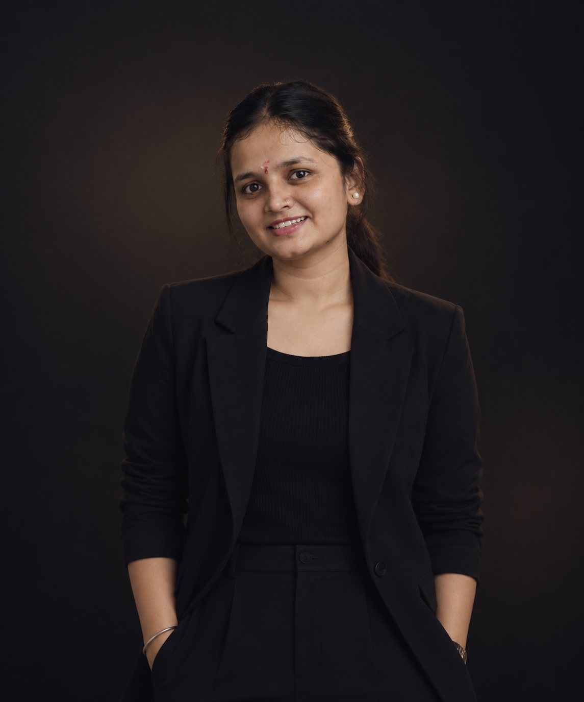

Trims, cuts, transitions, and slow motion — placed where the moment asks for them.
I’m Varsha, a video editor who turns raw footage into stories worth returning to. I edit weddings, couple films, and other stories with thoughtful pacing, natural cuts, and feeling-first detail.

My specialty: full-day footage condensed into one film - vows, rituals, reactions, and the in-between moments nobody thinks to film twice.
Quieter, slower edits built around one feeling - pacing that matches how the moment actually felt to be in.
Travel, family, and everyday footage - any raw clips, arranged into something worth watching back.
I turn raw footage into the version people want to watch again - with the right trims, pauses, and cuts.